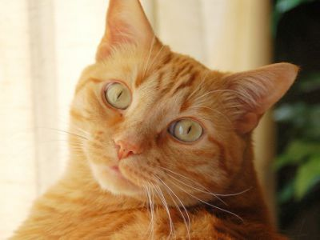

Gatos romanos
Los gatos romanos se caracterizan por su M en la frente y por sus líneas atigradas que a veces se presentan en formas de manchas.
Gato naranjo
Los gatos naranjos son de los mas populares, no sólo porque Garfield es un gato naranjo, sino que también son populares porque se dice que tienen una personalidad difícil, ya que al parecer pequeños tigres, muchos dueños de gatos de este tipo concuerdan con que tienen una personalidad más salvaje, cazadora y aventurera. Es común ver en internet videos donde éstos gatos protagonizan hazañas en exteriores.